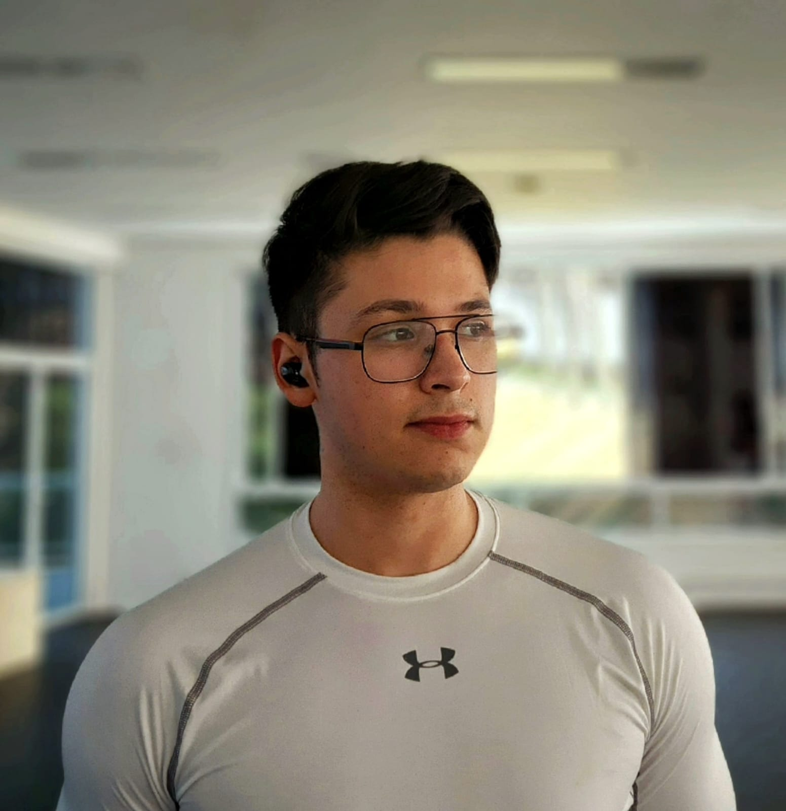

CGAX

As an ambitious student pursuing a Bachelor's degree in Information Systems, I am eager to apply my technical skills, creative problem-solving abilities, and passion for technology to a dynamic organization. Throughout my studies, I have gained a foundation in database management, software development, and business operations. I am highly motivated and dedicated, demonstrated by my involvement in various student organizations and technology-focused projects. My ability to work effectively in a team and as an individual has allowed me to make a positive impact on several projects. I am confident that my enthusiasm and drive, combined with my technical skills, will make me a valuable asset to any company in the technology industry.
Some of the software I’ve used while on my studies at university include: Eclipse, Visual Studio Code, Astah UML, SQL Developer Data Modeler.
I’ve learn how to code on the next languages: Java, CSS, HTML. Currently studying Kotlin
Throughout my life I’ve learned the next languages to a fluent level: Spanish, Brazilian Portuguese and American English.
While in my studies ive had experience in various projects helping me develop this skills: Teamwork, Communication, Creativity, Curiosity, Collaboration, Adaptability.